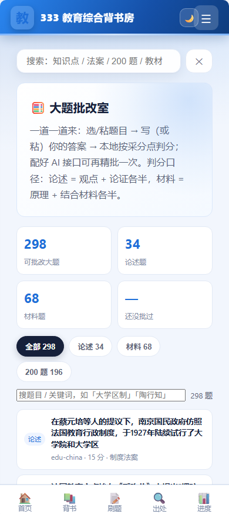
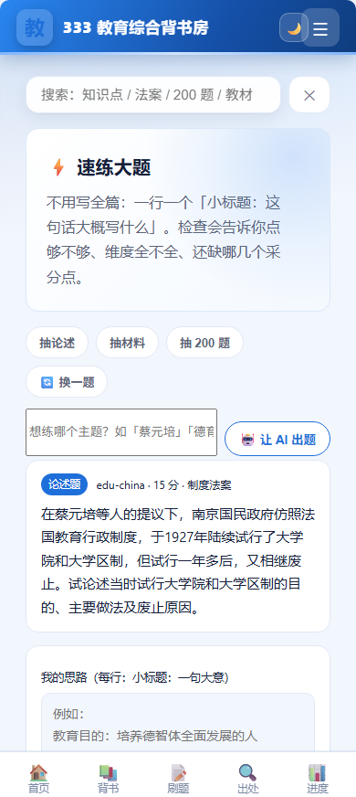
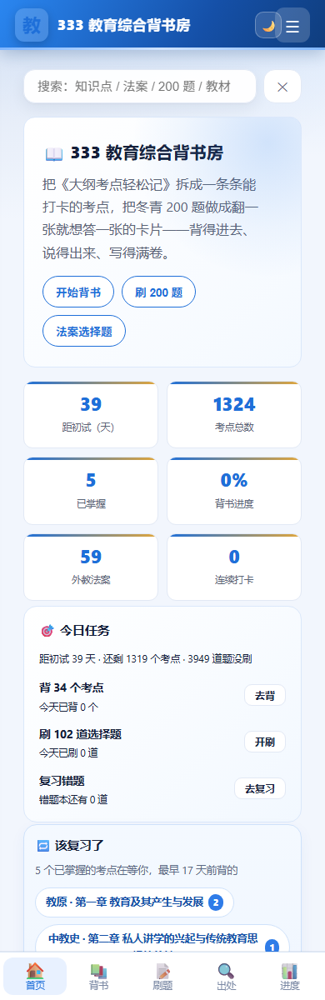
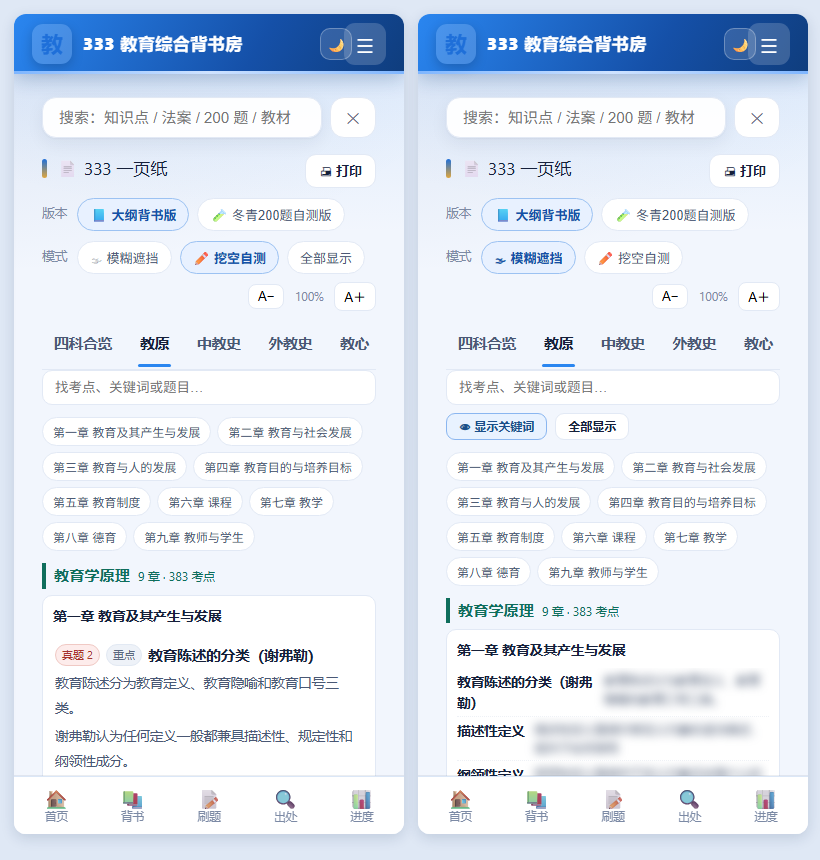
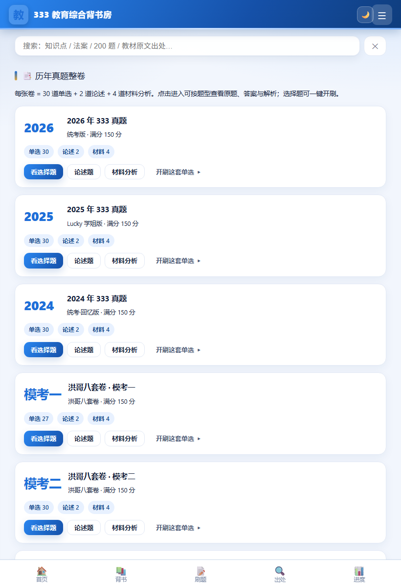
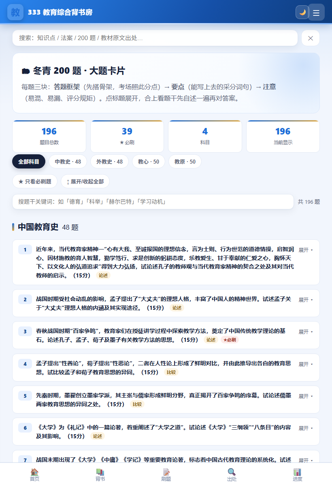
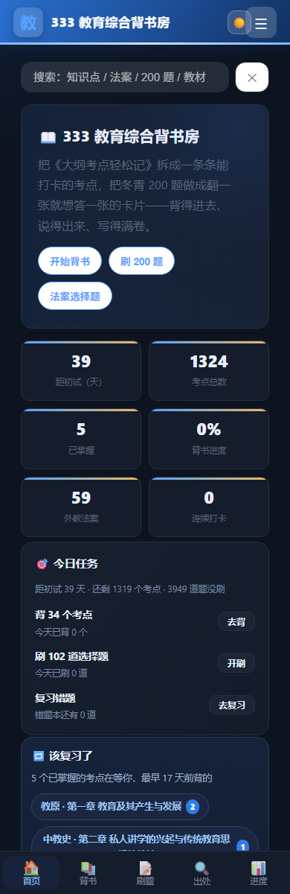
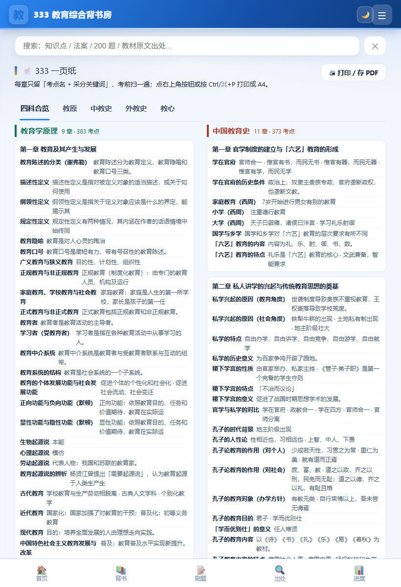

1324 个考点、4204 道题、17 套真题整卷，装进一个 APK 或一个 HTML 文件里。 不联网、不注册、不收集任何数据，打开就能背。
网页版首次加载约 16.6 MB，建议 Wi-Fi 下打开；装 APK 可完全离线，速度最快。
手机、平板、电脑都能用；深色模式、横竖屏都调过。








不是把 PDF 塞进浏览器，是按「背 → 练 → 测 → 查」重新做的。
298 道论述/材料/200 题，按采分点判分：分数、亮点、扣分依据、参考答案一次给全；可配 AI 精批。
只写「小标题：一句大意」就能估分，检查采分点覆盖、四字小标题与维度，三秒列点。
39 章 1324 考点，框架 / 要点 / 关键词分层；打勾后按 1→3→7→15 天自动回到首页复习队列。
18 份学姐周总结抽成 47 条：错在哪、为什么错、下次怎么躲；错题 12 · 重点 26 · 技巧 4 · 热点 5，可按周筛、可搜。
14 个热点主题给「出题角度 → 答题素材 → 关联考点」，另配 20 道专项题与 14 条选择题速记。
冬青、丹丹、凯程、真题、模拟卷、法案，可整库刷也可只刷一章；错了自动归类，能只刷本章错题。
2024 / 2025 / 2026 严格按考场结构；洪哥八套、丹丹六套模拟卷；任何题都能跳回原卷原题。
模糊遮挡版 + 挖空自测版，考前随手翻；真题 / 大题 / 重点有徽标，支持缩放与打印。
按知识点分科目列原文，同义词自动扩展；命中真题标红，一键跳到原卷。
数据全在本机；热力图看掌握度，进度可导出 JSON，换平板/手机导入接着用。
所有数字都是真实入库的，不注水；OCR 缺行的地方会明确标注，不编造题目。
| 项目 | 数量 |
|---|---|
| 考点 | 1324（教原 383 / 中教史 373 / 外教史 274 / 教心 294） |
| 选择题 | 4204 |
| 冬青 1200 / 丹丹 1000 / 凯程 | 1151 / 1187 / 1332 |
| 真题整卷 / 模拟卷 / 外教法案 | 89 / 398 / 47 |
| 冬青 200 题 · 材料分析题 | 196 · 67 |
| 可批改大题 | 298 道（论述 34 / 材料 68 / 冬青 196）· 采分点平均 7.1 点 |
| 整卷 | 17 套（三年真题 + 洪哥八套 + 丹丹六套） |
| 教材原文库 | 22 本 · 约 5200 页 |
| 考点出处 / 考点↔题目联动 | 1030 / 1324 · 679 个考点 |
项目完全开源，代码、数据、打包方式都能自己改一份。
如果它帮到了你：点个 Star、关注抖音、或者来 QQ 聊聊你想加的功能。
资助 / 合作 / 定制：QQ 备注「333」即可。